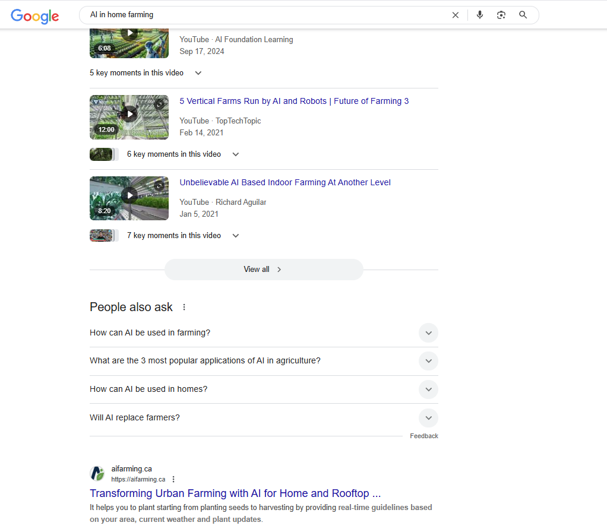
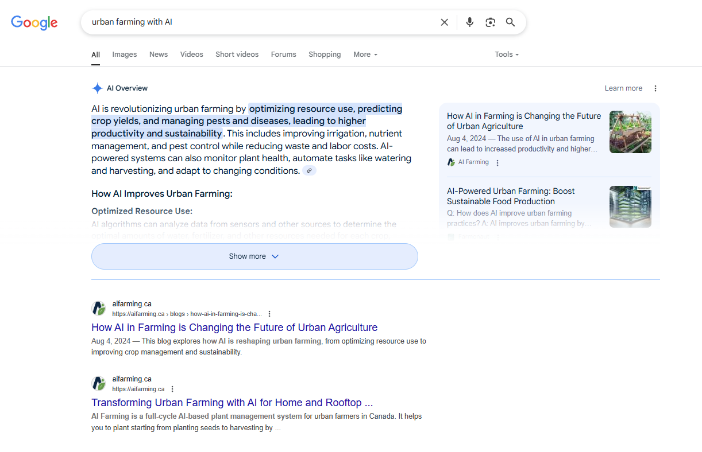
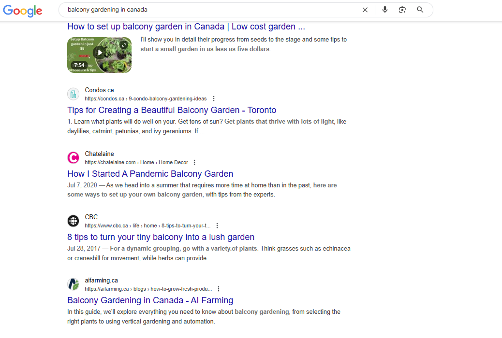

Page 1
Ranking for "AI in home farming"
Ranked
"balcony gardening in canada" and "carrot growth stages"
Authority
Built topic authority in "home farming + AI" segment
Higher
Time-on-site through interactive content and SEO-backed blog flow



Objective
Drive organic discovery for urban farming solutions using AI tools. AiFarming needed to reach home gardeners and urban farmers in Toronto who were looking for smarter ways to grow food at home.
Strategy
- Targeted keywords like "AI in home farming", "urban farming with AI", and specific plant milestones like "how to grow tomatoes at home"
- Developed a blog strategy that aligns with urban gardeners in Toronto
- Used SEO to structure plant-growing milestones (e.g., for tomatoes, lettuce, cabbage)
- Created educational and location-specific content to position as a niche authority
Execution
The challenge with AiFarming was that the keyword space sits at the overlap of two worlds: agriculture and AI. Most people searching for home farming tips are not thinking about AI, and most people searching for AI tools are not thinking about growing tomatoes. So I had to bridge that gap with content that felt natural to both audiences. The blog strategy focused on practical questions that gardeners actually ask, things like growth stages for specific plants, balcony gardening tips for Canadian apartments, and seasonal planting guides. Then I wove in the AI angle by showing how the platform helps track those milestones and gives personalized recommendations. Each article was built around a target keyword and structured to rank. The location-specific content helped the site build relevance for Toronto-based searches. Over time, the site started ranking on page 1 for several of its core terms, and time-on-site went up as visitors moved through the blog content.
Want results like this?
Send me your account and I'll tell you what I'd change first. No cost, no pitch.
Get a free audit →